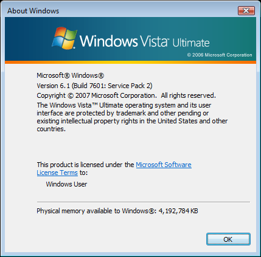

El proceso de instalación de Extended Kernel es bastante simple y en esta guía escrita les mostraré paso a paso cómo instalar Extended Kernel y cómo usarlo.
Importante: deben descargar los archivos desde este enlace.
Prerrequisitos: Windows Vista SP2 (32 o 64 bits, preferiblemente 64 bits) instalado.
Paso 1: Descargar e instalar la actualización cumulativa KB4474419. Deben elegir la versión para Windows Server 2008 y dependiendo de la arquitectura de su procesador deben descargar el archivo que dice x86 para 32 bits o el que dice x64 para 64 bits.
Paso 2: Descargar e instalar la actualización cumulativa KB971512. Deben elegir la versión para Windows Vista y al igual que con la actualización anterior deben elegir el archivo que corresponda a la arquitectura de su procesador.
Paso 3: Descargar el archivo vistaexkernsetup_03092023.7z y extraerlo con WinRAR o 7-zip. Dicho archivo se encuentra en el enlace de más arriba.
Paso 4: Entre los archivos extraídos, ejecutar el archivo setup.exe como administrador y cuando se abra la ventana del terminal presionan cualquier tecla (excepto R).
Paso 5: Descargar el archivo mfplatsetup.7z y extraerlo con WinRAR o 7-zip.
Paso 6: Entre los archivos extraídos, ejecutar el archivo mfplatsetup.cmd como administrador, luego presionar cualquier tecla.
Paso 7: Abrir el Bloc de Notas y pegar el siguiente texto:
[global]
Enabled=1
MajorVersion=6
MinorVersion=1
BuildNumber=7601
Luego se debe guardar el archivo como osver.ini (es importante cambiar la extensión del archivo, lo cual se puede hacer cambiando el tipo de guardado a "Todos los archivos" o "All Files"). Dicho archivo deberá ser movido a la carpeta C:\Windows.
En este caso, cada línea tiene un significado:
Esto engañará a las aplicaciones para que piensen que se está usando Windows 7 en vez de Windows Vista. En el caso de OBS, deberán cambiar MajorVersion a 10, MinorVersion a 0 y BuildNumber a 19045, 19044, 19042 o cualquier número de compilación válido para Windows 10. Esto le hará pensar a OBS que se está instalando en Windows 10 (Nota: Para algunos programas deberán restablecer los valores a los de más arriba después de instalar OBS).
|  |
| Ejemplo de cómo quedaría winver después de guardar el archivo osver.ini |
¡Y listo! Ya tienen Extended Kernel completamente instalado y listo para usar.
Lista de programas que funcionan en Windows Vista haciendo uso de Extended Kernel.
Firefox 102 ESR e inferiores (las últimas versiones deberían funcionar, pero en mi caso no logré hacerlas funcionar).
Chromium 109 e inferiores
Visual Studio Code 1.77.3
OBS Studio 30.0.2
LibreOffice 7.5.3.2
WinRAR (última versión)
Notepad++ (última versión)
Cualquier programa que funcione nativamente en Windows Vista sin Extended Kernel (ej. 7-Zip o VLC Media Player)
Steam (última versión)
Adobe Reader (última versión)
{kind=link}